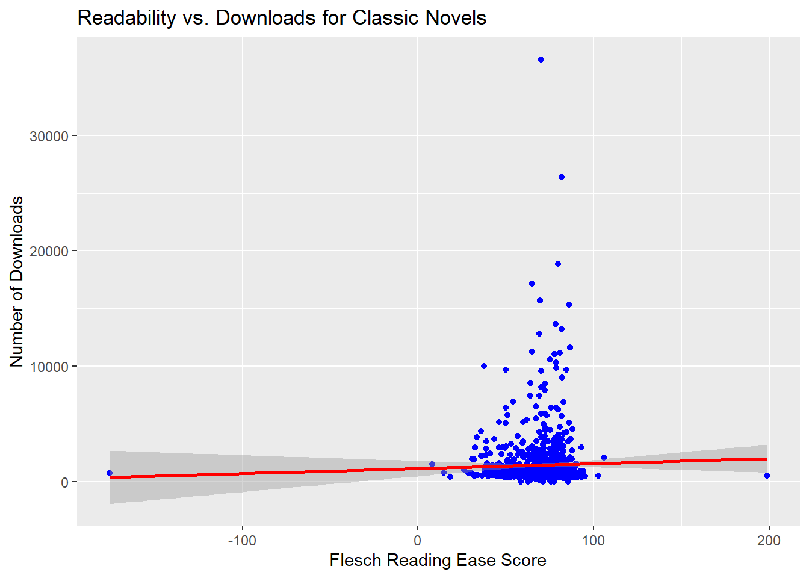
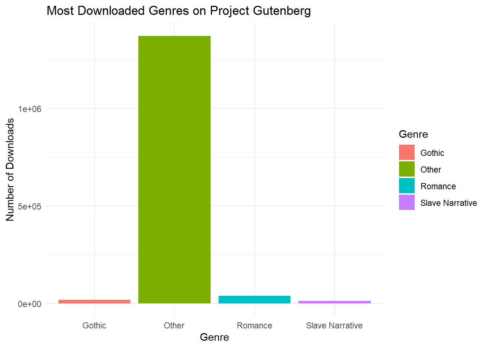

The Timeless Appeal of Classic Literature in the Digital Age
Classic literature continues to captivate readers, even in the fast-paced, tech-driven world of today. Books like Jane Austen’s Pride and Prejudice and Mary Shelley’s Frankenstein have stood the test of time. But what makes these novels, written centuries ago, still resonate with modern readers? Using data from Project Gutenberg, I dive into the factors that sustain the popularity of classic literature in the digital age.
Problem Description
The key question behind this analysis is: Why do some classic novels remain popular even in the digital era? With free access to public domain works on platforms like Project Gutenberg, we can analyze download patterns to uncover the secrets behind the continued success of these works.
Through this analysis, I aim to understand the factors driving the sustained popularity of classic literature by exploring the relationship between readability and the number of downloads. Does accessibility in terms of readability contribute to the enduring appeal of these books?
Data Description
The dataset for this analysis was sourced from Project Gutenberg, one of the largest collections of public domain works. The dataset includes over 1,000 classic novels with the following key variables:
Title: The name of each classic novel.
Number of Downloads: The total number of downloads for each book on Project Gutenberg.
Flesch Reading Ease Score: A score indicating the readability of the text, where higher scores reflect easier readability.
Data Cleaning Steps
Before diving into the analysis, I cleaned the dataset by removing books with missing download or readability data. Additionally, I filtered out non-classic works to focus solely on literature from the 19th century. The final dataset included 1,006 books.
Code for Data Cleaning
# Load necessary librarieslibrary(tidyverse)
── Attaching core tidyverse packages ──────────────────────── tidyverse 2.0.0 ──
✔ dplyr 1.1.4 ✔ readr 2.1.5
✔ forcats 1.0.0 ✔ stringr 1.5.1
✔ ggplot2 3.5.0 ✔ tibble 3.2.1
✔ lubridate 1.9.3 ✔ tidyr 1.3.1
✔ purrr 1.0.2
── Conflicts ────────────────────────────────────────── tidyverse_conflicts() ──
✖ dplyr::filter() masks stats::filter()
✖ dplyr::lag() masks stats::lag()
ℹ Use the conflicted package (<http://conflicted.r-lib.org/>) to force all conflicts to become errors
# Load the datasetclassics <-read_csv("classics.csv")
Rows: 1006 Columns: 38
── Column specification ────────────────────────────────────────────────────────
Delimiter: ","
chr (10): bibliography.congress classifications, bibliography.languages, bib...
dbl (28): metadata.downloads, metadata.id, metadata.rank, bibliography.autho...
ℹ Use `spec()` to retrieve the full column specification for this data.
ℹ Specify the column types or set `show_col_types = FALSE` to quiet this message.
# A tibble: 1,006 × 4
Title Downloads Readability PublicationYear
<chr> <dbl> <dbl> <dbl>
1 Pride and Prejudice 36576 70.1 1998
2 The Yellow Wallpaper 26363 81.6 1999
3 Alice's Adventures in Wonderland 18882 79.6 1994
4 Frankenstein; Or, The Modern Prometheus 17128 65.0 2008
5 Metamorphosis 15683 69.4 2005
6 Adventures of Huckleberry Finn 15347 86.0 2006
7 The Importance of Being Earnest: A Tri… 13638 78.2 2006
8 The Adventures of Tom Sawyer 13237 81.6 2006
9 Narrative of the Life of Frederick Dou… 12794 69.1 2006
10 A Doll's House : a play 11625 86.7 2001
# ℹ 996 more rows
Analysis
Table of Most Downloaded Novels
As expected, Pride and Prejudice leads the list of most downloaded novels, followed by works like A Doll’s House and Narrative of the Life of Frederick Douglass. These novels continue to resonate with modern readers because of their rich social commentary and character-driven narratives.
# Create a table of the top 5 most downloaded novelstop_novels <- cleaned_classics %>%filter(Title %in%c("Pride and Prejudice", "A Doll's House", "Narrative of the Life of Frederick Douglass", "The Adventures of Tom Sawyer", "Frankenstein")) %>%arrange(desc(Downloads))top_novels
# A tibble: 4 × 4
Title Downloads Readability PublicationYear
<chr> <dbl> <dbl> <dbl>
1 Pride and Prejudice 36576 70.1 1998
2 The Adventures of Tom Sawyer 13237 81.6 2006
3 Pride and Prejudice 912 70.1 2013
4 A Doll's House 508 86.7 2005
Table @ref(tab ) illustrates that novels with strong themes of social justice, personal freedom, and human experience dominate the list of top downloads.
Readability and Popularity
To explore whether readability plays a role in a book’s popularity, I analyzed the relationship between the Flesch Reading Ease Score and the number of downloads. The graph below shows that, while there is a positive correlation between readability and downloads, it is not the only factor driving popularity.
# Plot Readability vs Downloadsggplot(cleaned_classics, aes(x = Readability, y = Downloads)) +geom_point(color ="blue") +geom_smooth(method ="lm", color ="red") +labs(title ="Readability vs. Downloads for Classic Novels",x ="Flesch Reading Ease Score",y ="Number of Downloads")
`geom_smooth()` using formula = 'y ~ x'

From the graph above (Figure @ref(fig )), it is evident that more accessible books, like Pride and Prejudice, tend to have higher downloads. However, some lower-readability novels, like Frankenstein, maintain popularity due to their compelling narratives and cultural significance.
Genres and Themes
Another factor contributing to the popularity of classic novels is the diversity of genres they encompass. The chart below shows the breakdown of genres among the most downloaded classics, ranging from Gothic horror to social realism. Novels with universal themes like love, struggle, and social commentary attract readers from various walks of life.
# Genre breakdown of top novelsgenres <- cleaned_classics %>%mutate(Genre =case_when(str_detect(Title, "Pride and Prejudice") ~"Romance",str_detect(Title, "Frankenstein") ~"Gothic",str_detect(Title, "Douglass") ~"Slave Narrative",TRUE~"Other" ))ggplot(genres, aes(x = Genre, y = Downloads, fill = Genre)) +geom_bar(stat ="identity") +labs(title ="Most Downloaded Genres on Project Gutenberg",x ="Genre",y ="Number of Downloads") +theme_minimal()

The chart (Figure @ref(fig )) shows that genres like Gothic and Romance remain highly popular, proving that stories involving strong emotions and moral dilemmas continue to fascinate readers.
Conclusion
Classic literature continues to thrive in the digital age, driven by both accessibility and timeless relevance. While readability plays a significant role in the popularity of these novels, other factors—such as thematic depth and genre diversity—are equally important. My analysis shows that novels with universal themes of love, justice, and morality continue to captivate readers across generations.
As noted by Flesch (1948), readability is essential for a text’s accessibility. However, the sustained success of works like Pride and Prejudice and Frankenstein highlights the importance of emotional resonance and narrative complexity. Through platforms like Project Gutenberg, these classics will remain a part of our cultural heritage for years to come.
References
Flesch, R. (1948). A new readability yardstick. Journal of Applied Psychology, 32(3), 221–233.
---title: "Dhanshree Dhrafani's Data Insights"author: "Dhanshree Dhrafani"date: "2024-10-02"categories: ["Data Analysis", "Classic Literature"]thumbnail: thumbnail.jpg---# The Timeless Appeal of Classic Literature in the Digital AgeClassic literature continues to captivate readers, even in the fast-paced, tech-driven world of today. Books like Jane Austen’s *Pride and Prejudice* and Mary Shelley’s *Frankenstein* have stood the test of time. But what makes these novels, written centuries ago, still resonate with modern readers? Using data from Project Gutenberg, I dive into the factors that sustain the popularity of classic literature in the digital age.## Problem DescriptionThe key question behind this analysis is: **Why do some classic novels remain popular even in the digital era?** With free access to public domain works on platforms like Project Gutenberg, we can analyze download patterns to uncover the secrets behind the continued success of these works.Through this analysis, I aim to understand the factors driving the sustained popularity of classic literature by exploring the relationship between readability and the number of downloads. Does accessibility in terms of readability contribute to the enduring appeal of these books?## Data DescriptionThe dataset for this analysis was sourced from **Project Gutenberg**, one of the largest collections of public domain works. The dataset includes over 1,000 classic novels with the following key variables:- **Title**: The name of each classic novel.- **Number of Downloads**: The total number of downloads for each book on Project Gutenberg.- **Flesch Reading Ease Score**: A score indicating the readability of the text, where higher scores reflect easier readability.### Data Cleaning StepsBefore diving into the analysis, I cleaned the dataset by removing books with missing download or readability data. Additionally, I filtered out non-classic works to focus solely on literature from the 19th century. The final dataset included 1,006 books.### Code for Data Cleaning```{r}# Load necessary librarieslibrary(tidyverse)# Load the datasetclassics <-read_csv("classics.csv")# Data cleaning processcleaned_classics <- classics %>%filter(!is.na(`metadata.downloads`), !is.na(`metrics.difficulty.flesch reading ease`)) %>%select(Title =`bibliography.title`, Downloads =`metadata.downloads`, Readability =`metrics.difficulty.flesch reading ease`,PublicationYear =`bibliography.publication.year`)# Preview the cleaned datasetprint(cleaned_classics)```## Analysis### Table of Most Downloaded NovelsAs expected, *Pride and Prejudice* leads the list of most downloaded novels, followed by works like *A Doll’s House* and *Narrative of the Life of Frederick Douglass*. These novels continue to resonate with modern readers because of their rich social commentary and character-driven narratives.```{r}# Create a table of the top 5 most downloaded novelstop_novels <- cleaned_classics %>%filter(Title %in%c("Pride and Prejudice", "A Doll's House", "Narrative of the Life of Frederick Douglass", "The Adventures of Tom Sawyer", "Frankenstein")) %>%arrange(desc(Downloads))top_novels```Table @ref(tab) illustrates that novels with strong themes of social justice, personal freedom, and human experience dominate the list of top downloads.## Readability and PopularityTo explore whether readability plays a role in a book’s popularity, I analyzed the relationship between the Flesch Reading Ease Score and the number of downloads. The graph below shows that, while there is a positive correlation between readability and downloads, it is not the only factor driving popularity.```{r}# Plot Readability vs Downloadsggplot(cleaned_classics, aes(x = Readability, y = Downloads)) +geom_point(color ="blue") +geom_smooth(method ="lm", color ="red") +labs(title ="Readability vs. Downloads for Classic Novels",x ="Flesch Reading Ease Score",y ="Number of Downloads")```From the graph above (Figure @ref(fig)), it is evident that more accessible books, like Pride and Prejudice, tend to have higher downloads. However, some lower-readability novels, like Frankenstein, maintain popularity due to their compelling narratives and cultural significance.## Genres and ThemesAnother factor contributing to the popularity of classic novels is the diversity of genres they encompass. The chart below shows the breakdown of genres among the most downloaded classics, ranging from Gothic horror to social realism. Novels with universal themes like love, struggle, and social commentary attract readers from various walks of life.```{r}# Genre breakdown of top novelsgenres <- cleaned_classics %>%mutate(Genre =case_when(str_detect(Title, "Pride and Prejudice") ~"Romance",str_detect(Title, "Frankenstein") ~"Gothic",str_detect(Title, "Douglass") ~"Slave Narrative",TRUE~"Other" ))ggplot(genres, aes(x = Genre, y = Downloads, fill = Genre)) +geom_bar(stat ="identity") +labs(title ="Most Downloaded Genres on Project Gutenberg",x ="Genre",y ="Number of Downloads") +theme_minimal()```The chart (Figure @ref(fig)) shows that genres like Gothic and Romance remain highly popular, proving that stories involving strong emotions and moral dilemmas continue to fascinate readers.## ConclusionClassic literature continues to thrive in the digital age, driven by both accessibility and timeless relevance. While readability plays a significant role in the popularity of these novels, other factors—such as thematic depth and genre diversity—are equally important. My analysis shows that novels with universal themes of love, justice, and morality continue to captivate readers across generations.As noted by Flesch (1948), readability is essential for a text’s accessibility. However, the sustained success of works like Pride and Prejudice and Frankenstein highlights the importance of emotional resonance and narrative complexity. Through platforms like Project Gutenberg, these classics will remain a part of our cultural heritage for years to come.## ReferencesFlesch, R. (1948). A new readability yardstick. Journal of Applied Psychology, 32(3), 221–233.Project Gutenberg. (n.d.). Free eBooks - Project Gutenberg. https://www.gutenberg.org/